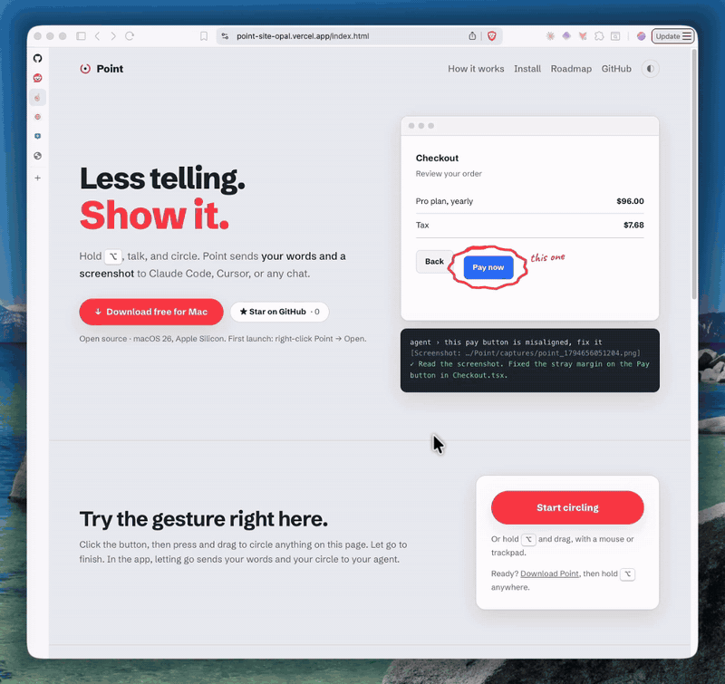

Show your agent.Don't tell.
Hold ⌥, talk, and circle. Point sends your words and a screenshot to Claude Code, Cursor, or any chat.
Open source · macOS 26, Apple Silicon. First launch: right-click Point → Open.
Checkout
Review your order
Try the gesture right here.
Click the button, then press and drag to circle anything on this page. Let go to finish. In the app, letting go sends your words and your circle to your agent.
Or hold ⌥ and drag, with a mouse or trackpad.
Ready? Download Point, then hold ⌥ anywhere.
Everything happens on one key.
- Talk
- Dictate into any app. Your words land at the cursor.
- Circle
- Your agent gets your words and a screenshot of what you circled.
- Notes
- Double-tap ⌥ for a sticky pad that saves as you type.
- History
- Search every capture, with screenshot, transcript, and recording.
See it in action.

Your voice stays on your Mac.
Point uses Apple's on-device speech engine. No account, no server, no audio uploaded anywhere. Captures live in a folder you can open, and the whole app is about 1,800 lines of Swift you can read before you run it.
Prefer another key? Pick Right Option, Left Control, Right Command, or Fn in Settings.
Install in a minute.
- Paste this into TerminalIt downloads the latest release into Applications and opens it. Read the script first if you like.
curl -fsSL https://raw.githubusercontent.com/sksareen/point/master/get.sh | bash - Grant three permissionsAccessibility to notice the key, Microphone to hear you, and Screen Recording the first time you circle something.
- Hold ⌥ and talkThat's it. Open the menu bar icon for your timeline and settings.
Rather build it yourself? git clone https://github.com/sksareen/point && ./install.sh